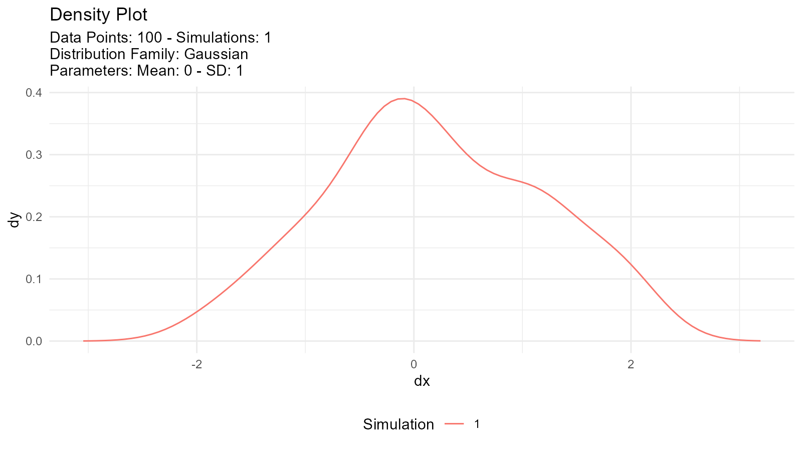
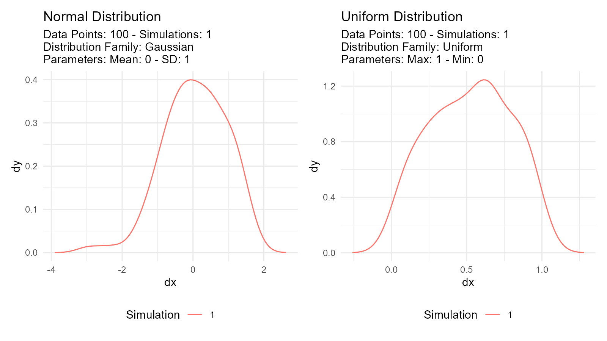
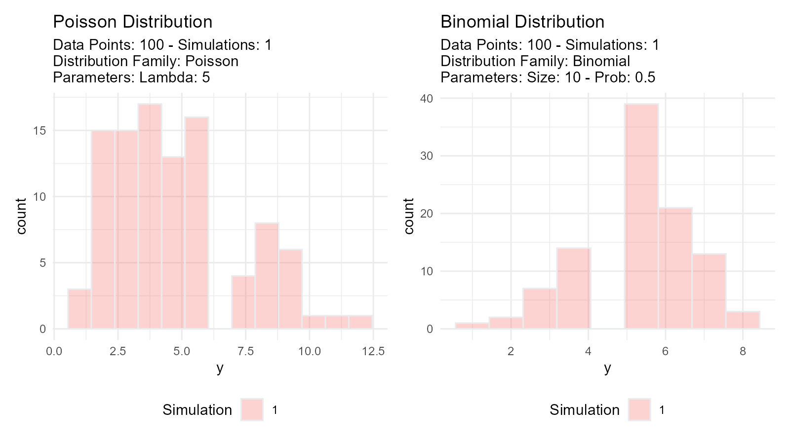
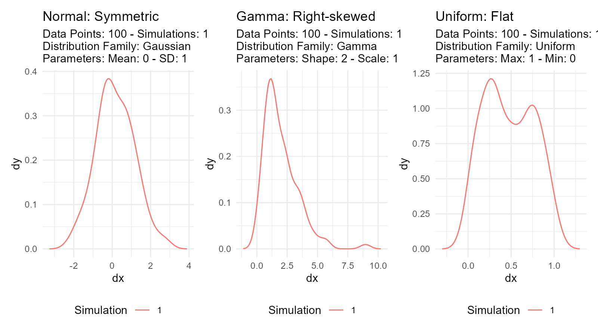
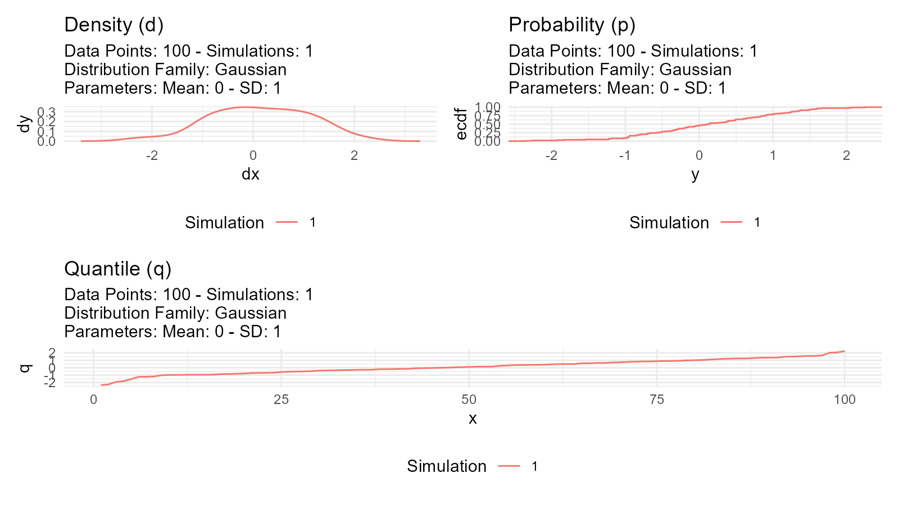
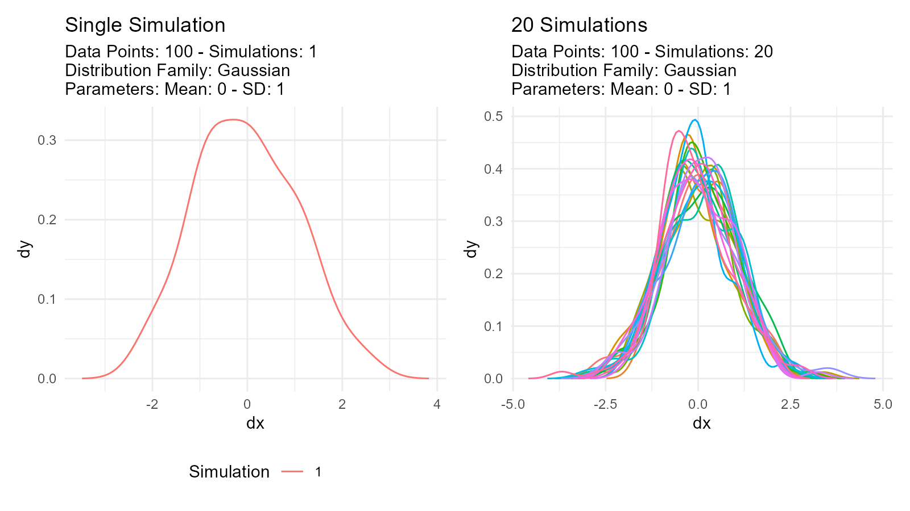
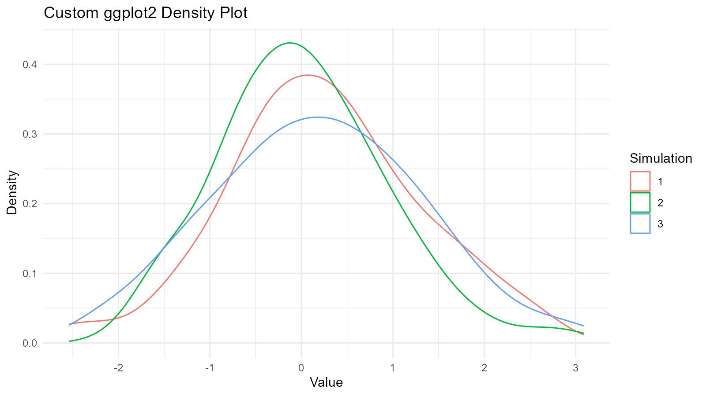

Understanding the fundamental concepts behind TidyDensity will help you use the package effectively.
Tidy Data Philosophy
What is Tidy Data?
Tidy data follows three principles:
- Each variable is a column
- Each observation is a row
- Each type of observational unit is a table
Why Tidy Data Matters
# Traditional approach (base R)
x <- rnorm(100)
# Just a vector - limited functionality
# TidyDensity approach
data <- tidy_normal(.n = 100)
# A tibble with structure:
# - sim_number: simulation ID
# - x: observation number
# - y: random value
# - dx, dy: density values
# - p: cumulative probability
# - q: quantile
head(data)
#> # A tibble: 6 × 7
#> sim_number x y dx dy p q
#> <fct> <int> <dbl> <dbl> <dbl> <dbl> <dbl>
#> 1 1 1 -0.387 -2.99 0.000241 0.349 -0.387
#> 2 1 2 -0.785 -2.92 0.000431 0.216 -0.785
#> 3 1 3 -1.06 -2.86 0.000743 0.145 -1.06
#> 4 1 4 -0.796 -2.79 0.00125 0.213 -0.796
#> 5 1 5 -1.76 -2.72 0.00202 0.0395 -1.76
#> 6 1 6 -0.691 -2.65 0.00318 0.245 -0.691Benefits of Tidy Format
1. Pipeable:
tidy_normal(.n = 100) |>
filter(y > 0) |>
summarise(mean = mean(y), sd = sd(y))
#> # A tibble: 1 × 2
#> mean sd
#> <dbl> <dbl>
#> 1 0.788 0.6512. Visualization-ready:
tidy_normal(.n = 100) |>
tidy_autoplot(.plot_type = "density")
3. Analysis-friendly:
tidy_normal(.n = 100, .num_sims = 10) |>
group_by(sim_number) |>
summarise(mean = mean(y))
#> # A tibble: 10 × 2
#> sim_number mean
#> <fct> <dbl>
#> 1 1 -0.177
#> 2 2 -0.0517
#> 3 3 -0.163
#> 4 4 0.0554
#> 5 5 -0.102
#> 6 6 0.138
#> 7 7 -0.147
#> 8 8 -0.207
#> 9 9 -0.0922
#> 10 10 0.0844Probability Distributions
What is a Probability Distribution?
A probability distribution describes how values of a random variable are distributed.
Types of Distributions
Continuous Distributions
Values can take any real number within a range:
# Normal distribution
normal_data <- tidy_normal(.n = 100, .mean = 0, .sd = 1)
# Uniform distribution
uniform_data <- tidy_uniform(.n = 100, .min = 0, .max = 1)
# Visualize both
p1 <- tidy_autoplot(normal_data, .plot_type = "density") +
ggtitle("Normal Distribution")
p2 <- tidy_autoplot(uniform_data, .plot_type = "density") +
ggtitle("Uniform Distribution")
p1 | p2
Discrete Distributions
Values can only take specific integers:
# Poisson distribution
poisson_data <- tidy_poisson(.n = 100, .lambda = 5)
# Binomial distribution
binomial_data <- tidy_binomial(.n = 100, .size = 10, .prob = 0.5)
# Visualize both
p1 <- tidy_autoplot(poisson_data, .plot_type = "density") +
ggtitle("Poisson Distribution")
p2 <- tidy_autoplot(binomial_data, .plot_type = "density") +
ggtitle("Binomial Distribution")
p1 | p2
Distribution Characteristics
Location (Center): - Where the distribution is centered - Examples: mean, median, mode
Scale (Spread): - How spread out the values are - Examples: standard deviation, variance, IQR
Shape: - Form of the distribution - Examples: skewness, kurtosis, modality
# Normal: Symmetric, bell-shaped
normal <- tidy_normal(.n = 100, .mean = 0, .sd = 1)
# Gamma: Right-skewed
gamma <- tidy_gamma(.n = 100, .shape = 2, .scale = 1)
# Uniform: Flat, all values equally likely
uniform <- tidy_uniform(.n = 100, .min = 0, .max = 1)
# Visualize characteristics
p1 <- tidy_autoplot(normal, .plot_type = "density") +
ggtitle("Normal: Symmetric")
p2 <- tidy_autoplot(gamma, .plot_type = "density") +
ggtitle("Gamma: Right-skewed")
p3 <- tidy_autoplot(uniform, .plot_type = "density") +
ggtitle("Uniform: Flat")
p1 | p2 | p3
Distribution Functions (d, p, q, r)
Every probability distribution has four related functions:
1. Density Function (d)
Probability Density Function (PDF) for continuous
distributions: - How likely is a specific value? - In
TidyDensity: dy column
data <- tidy_normal(.n = 100, .mean = 0, .sd = 1)
# dy column contains density values
head(data[, c("y", "dy")])
#> # A tibble: 6 × 2
#> y dy
#> <dbl> <dbl>
#> 1 -1.05 0.000147
#> 2 -1.38 0.000288
#> 3 0.479 0.000533
#> 4 -0.114 0.000941
#> 5 -0.603 0.00158
#> 6 -0.630 0.002542. Probability Function (p)
Cumulative Distribution Function (CDF): - What’s the
probability of getting a value ≤ x? - In TidyDensity: p
column
data <- tidy_normal(.n = 100, .mean = 0, .sd = 1)
# p column contains cumulative probabilities
# p = 0.5 means 50% of values are below this point
head(data[, c("y", "p")])
#> # A tibble: 6 × 2
#> y p
#> <dbl> <dbl>
#> 1 -0.566 0.286
#> 2 1.67 0.952
#> 3 -0.126 0.450
#> 4 1.21 0.886
#> 5 -0.0960 0.462
#> 6 -1.03 0.1503. Quantile Function (q)
Inverse of CDF (Quantile Function): - What value
corresponds to a given probability? - In TidyDensity: q
column
data <- tidy_normal(.n = 100, .mean = 0, .sd = 1)
# q column contains quantile values
# q at p=0.5 gives the median
head(data[, c("p", "q")])
#> # A tibble: 6 × 2
#> p q
#> <dbl> <dbl>
#> 1 0.293 -0.545
#> 2 0.405 -0.239
#> 3 0.834 0.970
#> 4 0.702 0.531
#> 5 0.612 0.284
#> 6 0.294 -0.5424. Random Generation Function (r)
Generate random values: - Simulate data from the
distribution - In TidyDensity: y column
data <- tidy_normal(.n = 100, .mean = 0, .sd = 1)
# y column contains randomly generated values
head(data[, c("x", "y")])
#> # A tibble: 6 × 2
#> x y
#> <int> <dbl>
#> 1 1 -1.17
#> 2 2 1.01
#> 3 3 0.594
#> 4 4 -1.00
#> 5 5 1.25
#> 6 6 -0.130Visual Comparison
data <- tidy_normal(.n = 100, .num_sims = 1)
# Density plot (d function)
p1 <- tidy_autoplot(data, .plot_type = "density") +
ggtitle("Density (d)")
# CDF plot (p function)
p2 <- tidy_autoplot(data, .plot_type = "probability") +
ggtitle("Probability (p)")
# Quantile plot (q function)
p3 <- tidy_autoplot(data, .plot_type = "quantile") +
ggtitle("Quantile (q)")
# Combined view
(p1 | p2) / p3
Random Number Generation
Pseudorandom Numbers
Computer-generated “random” numbers are actually pseudorandom: - Deterministic algorithm - Appears random but reproducible with same seed - Good enough for most applications
Setting Seeds for Reproducibility
# Use withr::with_seed() for reproducible results
data1 <- withr::with_seed(123, tidy_normal(.n = 10))
data2 <- withr::with_seed(123, tidy_normal(.n = 10))
# data1 and data2 are identical
all.equal(data1$y, data2$y)
#> [1] TRUEMultiple Simulations
Why use multiple simulations?
# Single simulation - might not represent true distribution
single <- tidy_normal(.n = 100, .num_sims = 1)
# Multiple simulations - better understanding of variability
multiple <- tidy_normal(.n = 100, .num_sims = 20)
p1 <- tidy_autoplot(single, .plot_type = "density") +
ggtitle("Single Simulation")
p2 <- tidy_autoplot(multiple, .plot_type = "density") +
ggtitle("20 Simulations")
p1 | p2
Use cases: - Assess sampling variability - Monte Carlo simulation - Sensitivity analysis - Uncertainty quantification
Parameter Estimation
What is Parameter Estimation?
Goal: Estimate distribution parameters from observed data
# Observed data
observed <- c(10.2, 9.8, 10.5, 10.1, 9.9)
# Estimate parameters
fit <- util_normal_param_estimate(observed)
# Get estimates
fit$parameter_tbl
#> # A tibble: 2 × 8
#> dist_type samp_size min max method mu stan_dev shape_ratio
#> <chr> <int> <dbl> <dbl> <chr> <dbl> <dbl> <dbl>
#> 1 Gaussian 5 9.8 10.5 EnvStats_MME_MLE 10.1 0.245 41.2
#> 2 Gaussian 5 9.8 10.5 EnvStats_MVUE 10.1 0.274 36.9Estimation Methods
Maximum Likelihood Estimation (MLE)
Concept: Find parameters that maximize probability of observing the data
Characteristics: - Asymptotically efficient - Best for large samples (n > 30) - Most commonly used
Model Selection
Akaike Information Criterion (AIC): - Balances fit quality with model complexity - Lower AIC = better model - Used to compare distributions
# Generate some data with local seed
data_y <- withr::with_seed(42, rnorm(100, mean = 5, sd = 2))
# Compare multiple distributions
normal_aic <- util_normal_aic(.x = data_y)
cauchy_aic <- util_cauchy_aic(.x = data_y)
logistic_aic <- util_logistic_aic(.x = data_y)
# Show AIC values
cat("Normal AIC:", normal_aic, "\n")
#> Normal AIC: 433.517
cat("Cauchy AIC:", cauchy_aic, "\n")
#> Cauchy AIC: 466.3125
cat("Logistic AIC:", logistic_aic, "\n")
#> Logistic AIC: 433.9747
# Choose distribution with lowest AIC
best_model <- c("Normal", "Cauchy", "Logistic")[which.min(c(normal_aic, cauchy_aic, logistic_aic))]
cat("Best model:", best_model, "\n")
#> Best model: NormalStatistical Inference
Hypothesis Testing
Using distributions for hypothesis tests:
# Test if sample mean differs from 0
observed_data <- withr::with_seed(456, rnorm(100, mean = 0.5, sd = 1))
# Generate null distribution with local seed
null_dist <- withr::with_seed(789, tidy_normal(.n = 100, .mean = 0, .sd = 1, .num_sims = 1000))
# Calculate test statistic
observed_mean <- mean(observed_data)
# Calculate null means for each simulation
null_means <- null_dist |>
group_by(sim_number) |>
summarise(sim_mean = mean(y), .groups = "drop")
# P-value: proportion of null means more extreme than observed
p_value <- mean(abs(null_means$sim_mean) >= abs(observed_mean))
cat("The mean of observed data is:", observed_mean, "\n")
#> The mean of observed data is: 0.6205748
cat("The p-value is:", p_value, "\n")
#> The p-value is: 0Confidence Intervals
Bootstrap confidence intervals:
# Bootstrap resampling
boot_data <- tidy_bootstrap(.x = observed_data, .num_sims = 2000)
# Calculate 95% CI
ci <- boot_data |>
bootstrap_unnest_tbl() |>
summarise(
lower = quantile(y, 0.025),
upper = quantile(y, 0.975)
)
cat("95% Confidence Interval:", ci$lower, "to", ci$upper, "\n")
#> 95% Confidence Interval: -1.22054 to 2.520635Power Analysis
Determining required sample size:
# Simulate to estimate power
simulate_test <- function(n, effect_size, alpha = 0.05) {
group1 <- rnorm(n, mean = 0, sd = 1)
group2 <- rnorm(n, mean = effect_size, sd = 1)
t.test(group1, group2)$p.value < alpha
}
# Run many simulations
n_sims <- 1000
power <- mean(replicate(n_sims, simulate_test(n = 50, effect_size = 0.5)))
cat("Power:", power, "\n")
#> Power: 0.68Tidyverse Integration
Works with dplyr
tidy_normal(.n = 100, .num_sims = 5) |>
group_by(sim_number) |>
summarise(
mean = mean(y),
sd = sd(y),
median = median(y)
) |>
arrange(desc(mean))
#> # A tibble: 5 × 4
#> sim_number mean sd median
#> <fct> <dbl> <dbl> <dbl>
#> 1 4 0.196 1.01 0.208
#> 2 2 0.107 0.986 0.0464
#> 3 3 0.0651 1.01 -0.0146
#> 4 1 0.0201 0.986 -0.0117
#> 5 5 0.0125 1.08 -0.109Works with ggplot2
data <- tidy_normal(.n = 100, .num_sims = 3)
# Custom ggplot
ggplot(data, aes(x = y, color = sim_number)) +
geom_density() +
theme_minimal() +
labs(
title = "Custom ggplot2 Density Plot",
x = "Value",
y = "Density",
color = "Simulation"
)
Works with tidyr
library(tidyr)
data <- tidy_normal(.n = 100, .num_sims = 3)
# Widen data
wide_data <- data |>
select(sim_number, x, y) |>
pivot_wider(names_from = sim_number, values_from = y, names_prefix = "sim_")
head(wide_data)
#> # A tibble: 6 × 4
#> x sim_1 sim_2 sim_3
#> <int> <dbl> <dbl> <dbl>
#> 1 1 -1.73 -1.76 0.191
#> 2 2 1.34 1.73 1.14
#> 3 3 2.07 -0.213 1.55
#> 4 4 -0.546 0.902 0.701
#> 5 5 -0.628 -0.426 1.02
#> 6 6 0.254 0.855 -1.74Works with purrr
library(purrr)
# Generate multiple distributions
distributions <- list(
normal = tidy_normal(.n = 100),
gamma = tidy_gamma(.n = 100, .shape = 2, .scale = 1),
beta = tidy_beta(.n = 100, .shape1 = 2, .shape2 = 5)
)
# Map over distributions
distributions |>
map(~ summarise(., mean = mean(y), sd = sd(y)))
#> $normal
#> # A tibble: 1 × 2
#> mean sd
#> <dbl> <dbl>
#> 1 0.0931 0.902
#>
#> $gamma
#> # A tibble: 1 × 2
#> mean sd
#> <dbl> <dbl>
#> 1 1.87 1.31
#>
#> $beta
#> # A tibble: 1 × 2
#> mean sd
#> <dbl> <dbl>
#> 1 0.274 0.152Key Takeaways
1. Tidy Format Enables Analysis
Every TidyDensity function returns a structured tibble that works with tidyverse tools.
2. Four Functions (d, p, q, r)
Understanding these four functions is key to working with distributions.
4. Reproducibility Matters
Use withr::with_seed() for reproducible random number
generation with explicit scope.